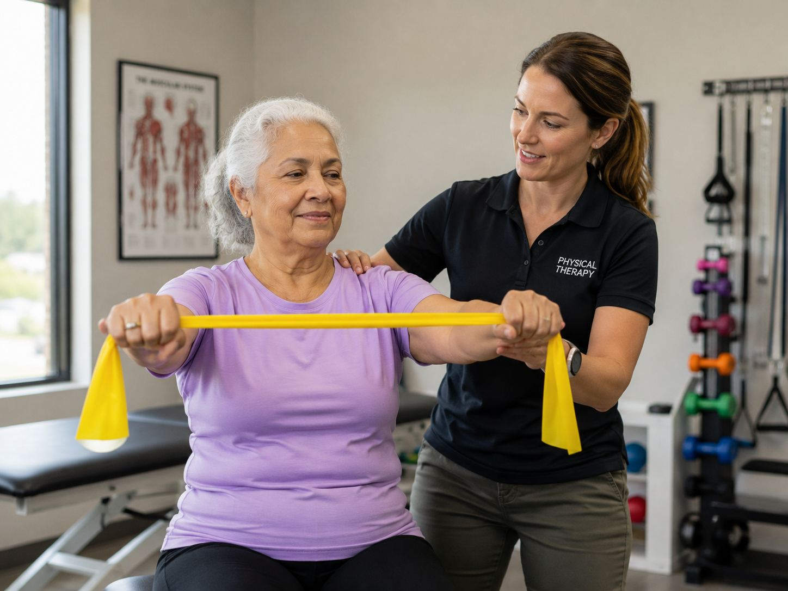

Rotator Cuff Repair
For selected traumatic or degenerative rotator cuff tears causing pain, weakness and loss of function.
- Often considered when weakness and imaging match symptoms
- Repair protects the tendon while it heals back to bone
- Recovery requires staged therapy and gradual strengthening